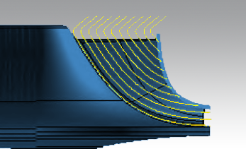
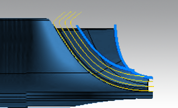
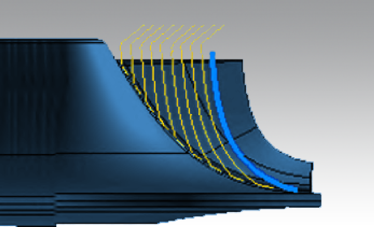
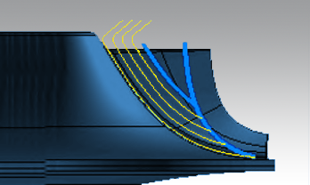
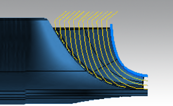
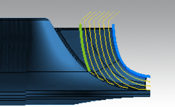
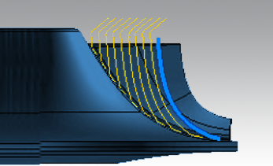
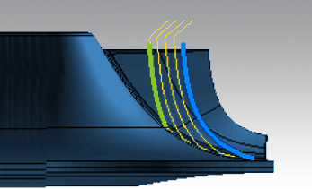
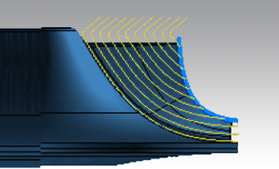
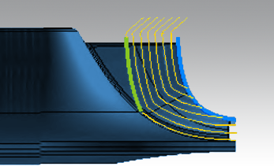

Parameters
Infeed
Max. lateral step: Defines the maximum lateral path distance within a roughing layer.
Axial infeed: This value defines the distance between the individual roughing layers (comparable to offset surfaces).
Allowances
Hub / Blade: Defines the remaining minimum allowance on the surfaces.
The following applies in the case of a succession of roughing operations:
-
The blade allowance remains constant or increases towards the bottom.
-
In the case of a sequence of shroud strategies, the hub allowance should remain constant.
-
In the case of hub-based strategies, the hub allowance is the lower limit and varies accordingly.
The top and bottom limits for the axial machining area are defined differently according to the selected milling strategy (Strategy dialog page).
Hub-based strategy (hub offset): The cut division is calculated as an offset starting from the hub. Both offset values can take account of a roughing machining job that has already been performed.
Machining area in the axial direction
Top limit
Shroud offset: Relative value to the shroud
A value > 0 defines the depth of a shroud-based machining job that has been performed previously. The value should therefore correspond to the machining depth of the preceding operation.
Hub offset: Relative value to the hub surface.
This value represents the remaining stock height of a previous roughing job. The stock height is the hub allowance. This value should therefore correspond to the allowance for the preceding job.
If you enter a value that is smaller than or equal to the current allowance, this milling area limit will be ignored. In this case, you should enter a value of 0, which corresponds to the default value.
Bottom limit
The defined offset to the hub serves as the lower limit for the axial machining area.
Explanation of the images
|  |
Complete machining, no limits assigned (both values = 0).
|  |
The previous machining does not use a bottom limit as an offset to the shroud. A very large allowance was left on the hub. This is typical of hub-based pre-machining.
|  |
The previous machining job uses a bottom limit as an offset to the shroud. There was no pre-machining with a large allowance on the hub. This is typical for shroud-based pre-machining.
|  |
Pre-machining jobs were undertaken here. The jobs had both a bottom limit as an offset to the shroud and a large hub allowance. This is typical for a sequence of several roughing operations.
Shroud-based Strategies
Machining area in the axial direction
Shroud offset (first path): The cut division is calculated as an offset to the shroud starting from the first path. The paths are trimmed against the hub surface and extended on this surface to the next-highest path.
Shroud offset (last path): In this method, the path profile is based on the last layer in the machining area (bottom limit), which is determined from the machining depth and the trimming relative to the hub.
The infeeds are then calculated as an offset to this last layer in the direction of the shroud. This means that an operation without a specified bottom limit (input value = 0) produces paths that correspond to those achieved using the hub-based method.
Milling area limitation
Top limit: shroud offset
-
Relative value to the shroud.
-
This value should correspond to the depth of a previous shroud-based operation. As a consequence, this value should also match the machining depth (bottom limit) for this operation.
Bottom limit: shroud offset
-
Relative value to the shroud.
The value 0 represents a special case. Here it is assumed that there is to be no depth limit.
Example: Shroud offset (first path)
|  |
Complete machining, no limits assigned (both values = 0).
|  |
There was no pre-machining.
The current operation uses a machining depth limitation as the offset to the shroud.
|  |
The previous machining job uses a bottom limit as an offset to the shroud.
The current operation itself has no machining depth limit. This is typical for shroud-based pre-machining.
|  |
Both the previous machining job and current operation use a bottom limit as an offset to the shroud.
This is typical for a sequence of several shroud-based roughing operations.
Example: Shroud offset (last path)
|  |
Complete machining, no limits assigned (both values = 0).
|  |
There was no pre-machining.
The current operation uses a machining depth limitation as the offset to the shroud.
The previous machining job uses a bottom limit as an offset to the shroud.
The current operation itself has no machining depth limit. This is typical for shroud-based pre-machining.
 |
Both the previous machining job and current operation use a bottom limit as an offset to the shroud.
This is typical for a sequence of several shroud-based roughing operations.
Path extension
Leading edge / Trailing edge: The toolpath is tangentially extended on the defined edge. With the help of this value, it is possible to accommodate large stock allowances on the edges. The last path in the roughing is extended over the entire hub. This achieves a uniform allowance for subsequent finishing.
You should enable this function if the top limit has been set so deep that only part of the hub will be machined and the preceding roughing job used a tool with a larger tip diameter.
Technology: Edge behavior
Edge tolerance: The precise traversing of a splitter produces a sharp direction change, which in turn leads to reduced feedrates. If you enter an edge tolerance that is not equal to zero, you can round the path to produce a more gentle movement.
Example: (1) Large edge tolerance, (2) Small edge tolerance.
Technology: Opening cut
To avoid overloading the milling tool, you can limit the maximum axial infeed in the full cut. As an alternative or in addition to this, you can adjust the feedrate and spindle RPM to suit the full cutting conditions.
Full cuts only: Available for the infeed strategies Flow zigzag, Flow oneway and Flow zigzag next where the Max. axial stepdown > 0.